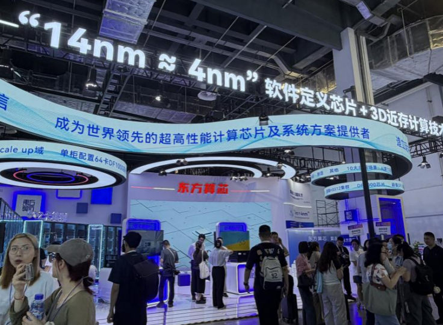

WORLD ARTIFICIAL INTELLIGENCE CONFERENCE / SHANGHAIWAIC
从模型竞赛
WAIC
2026
从模型竞赛
到智能伙伴
新品与产业亮点全景

1100+参展单位
3000+技术产品
300+全球首发
50等尺寸页面
按算力、模型、智能体、具身智能、终端、行业应用与治理完整重构。
封面1 / 50
键盘 ← → / PageUp PageDown · 移动端可左右滑动 · 每页链接可独立分享
新品与产业亮点全景

按算力、模型、智能体、具身智能、终端、行业应用与治理完整重构。
键盘 ← → / PageUp PageDown · 移动端可左右滑动 · 每页链接可独立分享